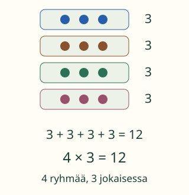

<link rel="stylesheet" href="lesson.css">
<section data-connection-lesson>

<section data-teaching-step="1" data-lesson-role="teaching-step">
<p> Aava ja Loikka katsovat neljää tarjotinta. Jokaisella on kolme palikkaa. Loikka kirjoittaa 3 + 3 + 3 + 3. Aava kirjoittaa 4 × 3. Miksi molemmat kertovat samasta joukosta?</p>
<h2>Sama joukko, kaksi tuttua tapaa</h2>
<p><strong>Tavoitteesi:</strong> Yhdistät kaksi tuttua laskutapaa ja näytät, mikä niissä vastaa toisiaan.</p>
<p>Tässä esimerkissä käytetään tuttua yhteenlaskua ja yhtä suurten ryhmien kertolaskua. Jos ne ovat vielä uusia, tutki ensin niitä aikuisen kanssa. Tämän sivun valinta ei tarkista aiempaa osaamistasi.</p>
</section>


<section data-teaching-step="2" data-lesson-role="teaching-step">
<h3>1. Näytä, mitä luvut tarkoittavat</h3>
<p>Ota neljä pientä alustaa ja pane jokaiselle kolme palikkaa. Jokaisesta alustasta tulee summaan yksi kolmonen: 3 + 3 + 3 + 3. Kolmosia on neljä. Siksi sama ryhmitys voidaan kirjoittaa 4 × 3.</p>
<figure data-lesson-role="worked-example"><figcaption>4 kertoo ryhmien määrän. 3 kertoo yhden ryhmän koon. Molemmat laskut antavat 12.</figcaption></figure>
</section>


<section data-teaching-step="3" data-lesson-role="teaching-step">
<h3>Miksi 4 + 3 ei käy tähän?</h3>
<p>Ryhmien määrä ja yhden ryhmän koko eivät ole kaksi erillistä palikkakasaa. Lasku 4 + 3 antaisi seitsemän. Meillä on neljä kolmen palikan ryhmää, kaikkiaan kaksitoista.</p>
</section>


<section data-teaching-step="4" data-lesson-role="teaching-step">
<h3>2. Sama yhteys hyllyssä</h3>
<p>Kolmella hyllyllä on kullakin kaksi purkkia. Yksi kakkonen jokaista hyllyä kohti: 2 + 2 + 2. Hyllyjä on kolme, joten myös 3 × 2 kertoo purkkien määrän. Molemmilla tavoilla tulos on kuusi.</p>
</section>


<section data-teaching-step="5" data-lesson-role="teaching-step">
<p data-lesson-role="question"><strong>Mieti:</strong> Jos siirrämme samat palikat ryhmistä riveiksi, tuleeko niitä lisää?</p>
<details data-lesson-role="answer"><summary>Ajatus</summary><p>Ei. Samat palikat ovat yhä mukana. Paikka voi vaihtua, vaikka kokonaismäärä ja ryhmien sisältö pysyvät samoina.</p></details>
</section>


<section data-teaching-step="6" data-lesson-role="teaching-step" data-audience-spacing="compact">
<div data-connection-practice hidden>
<h3>Siirrä ja rakenna yhteys</h3>
<fieldset data-audience-columns><legend>Yksi kuva, kaksi merkintää</legend><div data-visual-column><p data-context></p>
<div data-scene></div>
<p data-step-note></p>
<button type="button" data-action="step">Siirrä seuraava vaihe</button>
<button type="button" data-action="rewind">Kuva alkuun</button></div><div data-response-column><p>Kirjoita kuvan ryhmät: lisää summaan yksi luku jokaista ryhmää kohti.</p>
<button type="button" data-term="2">Lisää 2</button>
<button type="button" data-term="3">Lisää 3</button>
<button type="button" data-term="4">Lisää 4</button>
<p data-sum aria-live="polite"></p>
<button type="button" data-action="undo">Poista viimeinen luku</button>
<p><label>Ryhmien määrä <select data-groups><option value="">Valitse</option><option>2</option><option>3</option><option>4</option><option>5</option></select></label> × <label>Yhden ryhmän koko <select data-size><option value="">Valitse</option><option>2</option><option>3</option><option>4</option><option>5</option></select></label></p>
<button type="button" data-action="check">Tarkista yhteys</button>
<button type="button" data-action="clear">Merkinnät alkuun</button>
<button type="button" data-action="next">Toinen tilanne</button>
<p data-feedback role="status" aria-live="polite"></p></div></fieldset></div>
<details data-lesson-role="hint"><summary>Apua</summary><p>Peitä muut ryhmät hetkeksi ja katso yhden ryhmän sisältöä. Sama luku toistuu summassa kerran jokaista ryhmää kohti. Aikuinen voi lukea tekstit ja auttaa laskufaktoissa.</p></details>
</section>


<section data-teaching-step="7" data-lesson-role="teaching-step">
<details data-lesson-role="teaching-step"><summary>Kokeile lisää</summary><p>Järjestä kaksitoista palikkaa kolmeen neljän palikan ryhmään. Nyt 4 + 4 + 4 ja 3 × 4 kuvaavat uutta ryhmitystä. 3 × 4 ja 4 × 3 antavat saman määrän, vaikka ryhmien roolit vaihtuivat.</p></details>
</section>


<section data-teaching-step="8" data-lesson-role="teaching-step">
<details data-lesson-role="teaching-step"><summary>Toinen mahdollinen yhteys: osa ja jakaminen</summary><p>Kun ositusjako ja yhtä suuret murto-osat ovat jo tuttuja, jaa kaksitoista palikkaa neljään yhtä suureen ryhmään. Yhden ryhmän kolme palikkaa ovat neljäsosa kahdestatoista. Siksi ¼ luvusta 12 ja 12 : 4 antavat kumpikin kolme. Tämä lisäesimerkki ei kuulu yllä olevan harjoituksen vaatimuksiin.</p></details>
</section>

<details class="teacher" data-lesson-role="teacher-note"><summary>Aikuiselle ja ilman ruutua</summary><p>Luokat 3–6, prosessitaito. Kanoninen dynaaminen sääntö on kahden opitun sisältötaidon käyttäminen; sillä ei ole kiinteää required-ryhmää. Tämän pääesimerkin pari on M-ADD-01 ja M-MUL-01. Kaikki kahden taidon parit eivät sovi jokaiseen esimerkkiin. Älä aseta jakamista, murto-osia tai piiriä tämän harjoituksen yhteiseksi avausportiksi.</p><p>Tässä rajaus on luonnollisten lukujen yhtä suuret ryhmät. Kertolaskulla on muitakin merkityksiä. Harjoitus pyytää juuri näytetyn ryhmityksen, ei ainoaa mahdollista samanarvoista laskua. Palaute tunnustaa saman kokonaismäärän, vaikka ryhmitys on eri. Summa ja kertolasku rakennetaan valmiista merkeistä; tämä ei tarkista vapaata merkintää, itsenäistä päättelyä tai pysyvää yhteyksien ymmärtämistä. Mitään ei tallenneta. Ilman ruutua oppija siirtää samoja palikoita ja osoittaa, mitä luvut tarkoittavat.</p></details>

<section data-teaching-step="9" data-lesson-role="teaching-step">
<p data-lesson-role="question"><strong>Lopuksi:</strong> Neljä kolmen palikan ryhmää: mistä löydät nelosen ja mistä kolmosen yhteenlaskusta ja kuvasta?</p>
</section>

</section>
